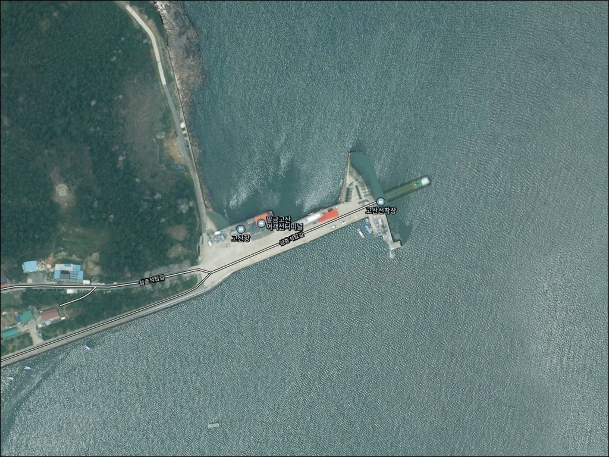
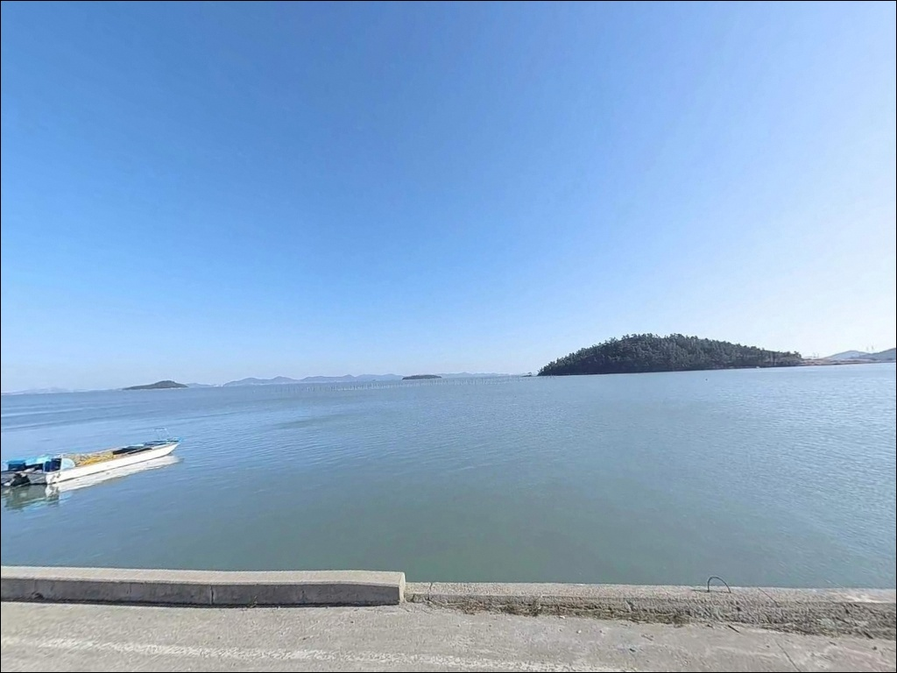
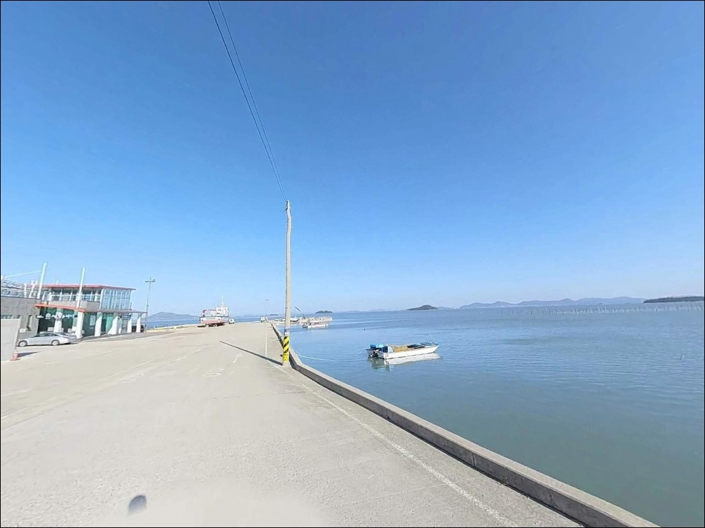
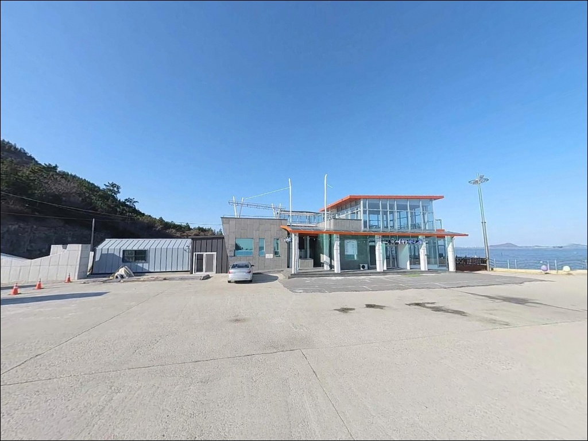
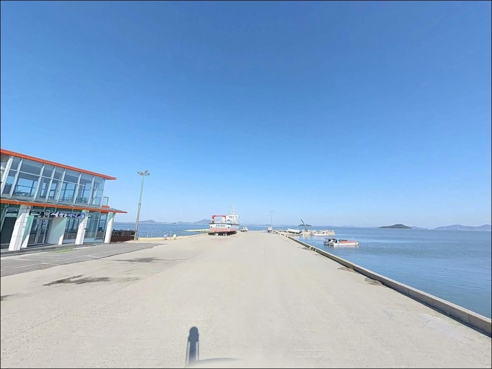
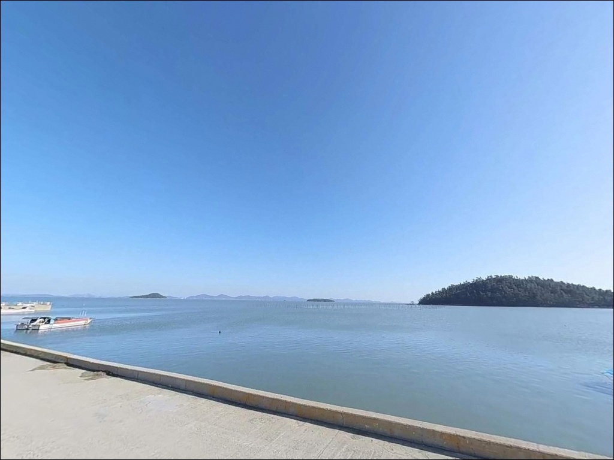
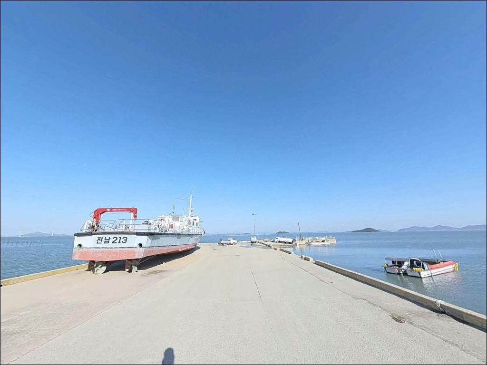
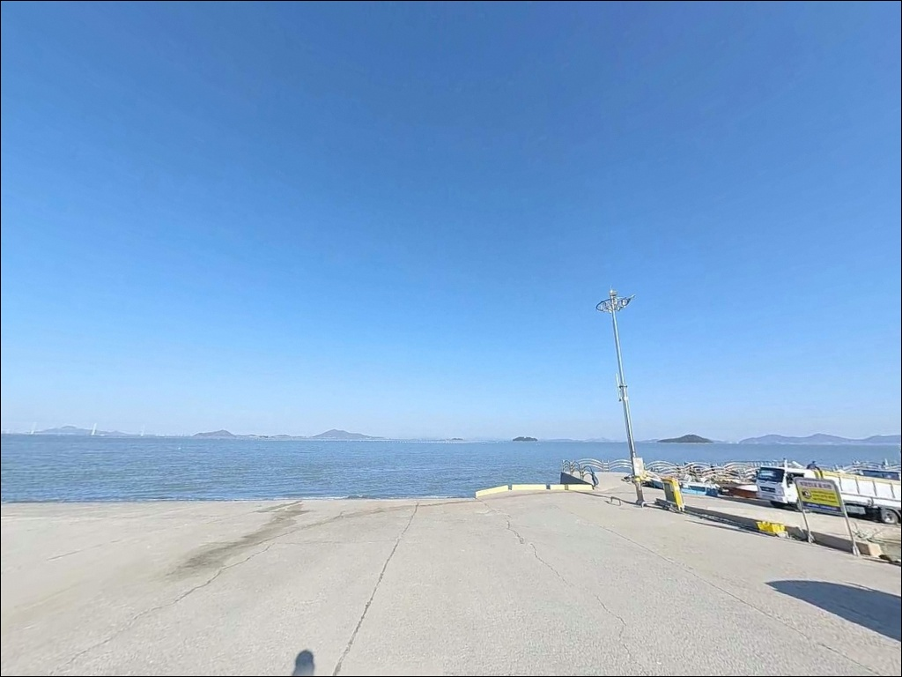
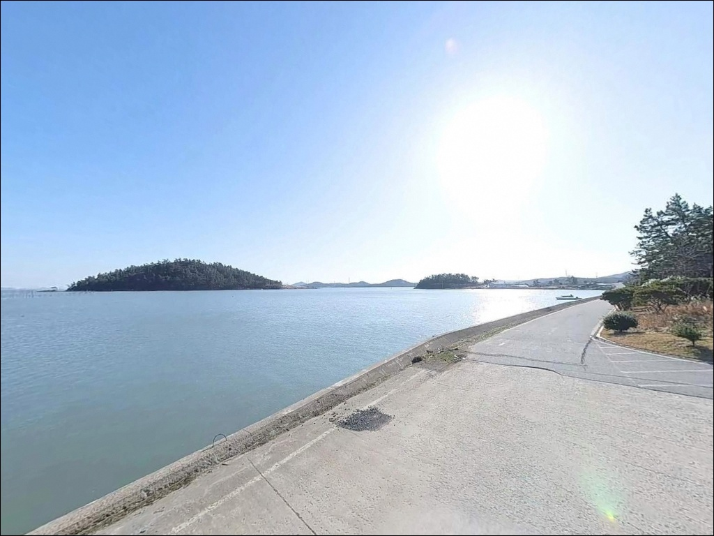

고산항(고산방파제,고산선착장), 팔금도 전남 신안군 자연의 여백을 느낄 수 있는 차박, 낚시 명소
이 페이지에는 광고(제휴 링크 포함)가 있으며, 광고 링크를 통해 구매하면 운영자가 판매 수익 또는 수수료를 받을 수 있습니다. 포인트 사진: 카카오맵 스카이뷰·로드뷰. 이 페이지의 지도·사진 이미지는 카카오맵의 실제 서비스 이미지와 다를 수 있습니다.


포인트 안내
고산항(고산방파제, 고산선착장)
전남 신안군 팔금면 당고리 20-2
고산항은 간조 때 포인트 대부분이 갯벌로 드러나는
얕은 수심 구조의 방파제 선착장입니다.
물때 확인 없이 찾아가면
낚시 자체가 불가능해지는 상황을
맞닥뜨릴 수 있습니다.
수심이 -2.2m에서 +0.3m 수준에 머무는 만큼,
만조 전후의 짧은 시간대에
낚시 여건이 집중되는 구조입니다.
어떤 채비를 써도
간조 시에는 앞바다가 갯벌로 드러납니다.
이 글은 고산항의 지형 조건, 물때 기준,
진입 환경, 낚시 스타일별 공략 조건에 집중합니다.
조황 단정이나 특정 어종 보장은
이 글의 범위에 포함되지 않습니다.

1. 진입 동선과 포인트 접근성
팔금도는 2019년 천사대교 개통으로
암태도~팔금도~안좌도 구간이 육지와 연결됐습니다.
고산항은 팔금면 당고리,
섬 동쪽 끝 해안선에 위치하며
팔금면 내부 도로를 따라 접근하는
소규모 마을 선착장 구조입니다.
팔금면 내부는 섬 도로 특성상
진입로 폭이 넓지 않은 구간이 포함됩니다.
마을 안쪽으로 이어지는 구간에서는
교행이 어려울 수 있어,
대형 SUV나 캠핑 장비를 갖춘 차량이라면
출발 전 위성지도로 진입로를 미리 확인해 두는 편이 좋습니다.
주차는 선착장 인근 공터나
방파제 입구 주변 여유 공간을 활용하는 방식이
가장 현실적인 후보입니다.
소규모 마을 어항 특성상
어선 이동 동선을 막지 않는 자리를
우선적으로 확인해야 합니다.

2. 차박 환경과 야간 체류 여건
고산항은 팔금도 동쪽 소규모 어촌 마을과
가까운 거리에 있는 선착장입니다.
민가와 거리가 가까운 구조라
차박 프라이버시는 제한적인 환경입니다.
야간에는 차량 통행이 적고 조용한 편이지만,
주민 생활권과 겹치는 위치인 만큼
심야 엔진 소음과 강한 불빛은 최소화하는 것이 기본 매너입니다.
야간 조명은 마을 가로등이 일부 있을 수 있으나,
소규모 어촌 특성상 충분하지 않은 편입니다.
개인 조명 장비는 반드시 준비해야 하며,
암반 저질 방파제 주변은
야간 이동 시 미끄러울 수 있어
주의가 필요합니다.
낚시를 마치고 조용히 하룻밤 머무는 용도로는
활용이 가능한 곳이지만,
차박을 메인으로 계획하기에는
주차 공간이 넉넉하지 않은 구조입니다.
방문 인원이 많을 경우
현장 확인 후 인근 포인트로 이동하는
플랜 B 동선을 미리 준비해 두는 편이 좋습니다.


3. 주변 편의시설 및 인프라 현황
고산항 반경 3km 이내에는
편의점이나 마트를 기대하기 어렵습니다.
팔금면은 섬 면 단위 행정구역으로
편의시설이 극히 제한적인 지역이므로,
완전 자급 체제로 진입하는 것이
현실적인 준비 방식입니다.
식수·얼음·낚시 소품·연료는
출발 전에 모두 갖춰야 합니다.
선착장 근처에는 고산대합실이 있어
기본 쉼터로 활용할 수 있습니다.
응급 상황 발생 시
신안군 보건 의료 시설까지
차량 이동이 필요한 거리이므로
비상약품과 비상 연락처는 미리 준비해 두어야 합니다.

4. 방문 전 반드시 챙겨야 할 준비사항
고산항을 방문하기 전
가장 먼저 확인할 것은 물때입니다.
수심이 -2.2m에서 +0.3m에 머무는 구조상
간조 시에는 포인트 대부분이 드러나는
갯벌형 지형입니다.
바다타임에서 고산항 기준 물때를 확인하고,
초들물~중날물 타이밍에 맞춰
출발 시각을 계산하는 것이 기본 전략입니다.
신안 해역은 편서풍 영향으로
날씨 변화가 빠른 편입니다.
기상청 예보를 당일 아침에 다시 한번 확인하는 것이
헛걸음을 막는 방법입니다.
저질이 암반이라 채비 손실이 발생할 수 있으므로
여분 채비는 넉넉하게 준비하는 편이 좋습니다.
감성돔 금어기는
매년 5월 1일~5월 31일 해양수산부 고시 기준으로
이 기간 포획이 금지됩니다.
마을 선착장이므로 어선 이동 동선과 어구에
접촉하지 않는 자리를 먼저 잡는 것이 기본 매너이며,
방파제 진입 전 구명조끼 착용은 필수입니다.

5. 간조엔 낚시 자리가 사라지는 고산항 지형 구조
고산항은 팔금도 동쪽 해안선에 자리한
소규모 방파제 선착장으로,
바다타임에 공식 낚시 포인트로 등재되어 있습니다.
수심은 조위 기준 -2.2m에서 +0.3m 범위로,
만조 전후에만 실질적인 수심이 확보됩니다.
간조 시에는 주변 갯벌이 드러나는
서해 남부 특유의 얕은 구조를 보입니다.
저질은 암반으로 확인됩니다.
암반 지형은 감성돔이 선호하는 서식 환경에 가깝고,
들물이 시작되면 어류의 먹이 활동이
살아나는 구조입니다.
적정 물때는 초들물~중날물이며,
이 타이밍에 조류가 흐르기 시작하며
낚시 반응이 나오는 편입니다.
팔금도 주변 해역은
창·낙조류가 4.0kn 이상으로 강하게 형성되는
수로형 지형과 인접해 있습니다.
이 조류 흐름이 포인트 진입 타이밍을
좌우하는 핵심 변수입니다.
주변에 간출암과 양식장이 분포해 있어
채비 운용에 주의가 필요하며,
최신 조황은 출조 전에 반드시 검색해 보시기 바랍니다.


6. 포인트에 어울리는 낚시 스타일
이 포인트에서 지형 조건과 가장 잘 맞는 방식은
릴찌낚시입니다.
암반 저질과 초들물~중날물 타이밍,
들물에 살아나는 조류 흐름은
방파제 외항 방향으로 찌를 흘리기 좋은
감성돔 릴찌 운용에 유리한 조건입니다.
봄~가을 전반에 걸쳐 시즌이 이어지며,
5월은 금어기로 포획이 금지됩니다.
원투낚시도 만조 전후 수심이 확보된 구간을
노리기 좋은 방식입니다.
암반 저질 특성상 채비 손실이 발생할 수 있으므로
여분 채비를 넉넉히 준비하는 것이 기본입니다.
감성돔·숭어를 함께 노릴 수 있으며,
갯지렁이·크릴을 기본 미끼로 활용합니다.
농어 루어낚시도 고산항 주변 지형에서 시도해 볼 만합니다.
팔금도 동측은 농어 시즌이 3월~11월로 길게 이어지는 지역입니다.
양식장 주변이나 수로 경계부를
미노우 플러그나 지그헤드류로 탐색하는 방식이
이 해역 농어 공략의 기본 패턴입니다.
숭어 홀치기는 간조 전후
숭어 무리가 선착장 내항으로 들어오는 상황에서
시도해 볼 수 있는 방식입니다.
조류가 느려지는 정조 타이밍에
집중하는 방식이 이 포인트 구조에 맞습니다.

7. 대안 포인트와 플랜 B 동선
고산항 조류가 너무 강하거나
주차 여건이 여의치 않을 때는
원산리 방파제가 첫 번째 대안입니다.
고산항에서 약 2.6km 거리에 있으며,
팔금도·안좌도 해안선에 위치한
바다타임 공식 등재 포인트입니다.
방파제 규모가 고산항보다 넓어
여러 명이 함께 낚시하기 수월한 환경입니다.
같은 해역 내 매도 선창도 인접 대안 포인트입니다.
고산항에서 약 2.3km 거리에 있으며,
동일 안좌도·팔금도권 해안선을 공유합니다.
한 번의 출조에서 복수 포인트를 묶어
탐색하는 동선이 이 해역에서 일반적인 방식입니다.
조류 조건을 달리하고 싶다면
신안교 동단 또는 서단이
약 4.7~5.1km 거리의 대안입니다.
안좌도·팔금도 해안선에서
다양한 낚시 스타일을 시도해 볼 수 있는 포인트이며,
고산항과 묶어 탐색하기 좋은 이동 동선입니다.

물때를 알면
고산항이 달라 보입니다
릴찌낚시와 원투낚시를 함께 운용하거나
농어 루어를 즐기는 낚시인이라면,
암반 저질과 들물 조류가 어우러지는
고산항의 지형 조건은 잘 맞는 구조입니다.
온라인 조황 정보가 많지 않아
직접 발품을 팔아야 하는
탐험형 포인트라는 점도
이 곳의 특징 중 하나입니다.
반면 물때 계산 없이 간조 전후에 찾아가거나,
편의시설을 기대하고 출발하면
낚시 자리 자체가 갯벌로 드러난 상황을
마주하게 됩니다.
물때 확인, 자급 준비, 진입로 점검,
이 세 가지를 갖추고 간다면
조용한 팔금도 동쪽 끝에서
만족스러운 출조가 될 수 있는 포인트입니다.
낚시 뒤 민가와 가까운 선착장에서
하룻밤 머무는 차박을 계획한다면,
주차 공간과 어선 동선을 현장에서 먼저 확인하고
조용하게 체류하는 방식을
기본 원칙으로 삼는 것이
이 포인트에 어울리는 출조 방식입니다.